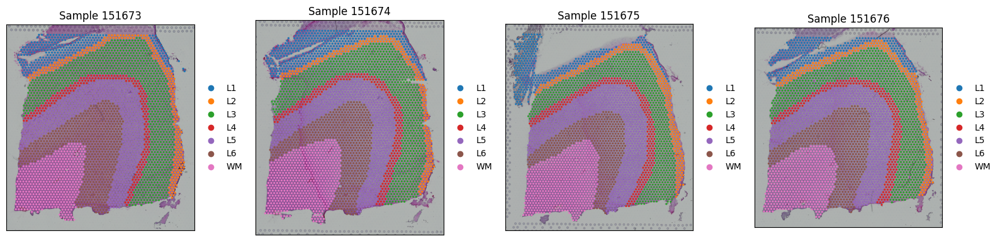
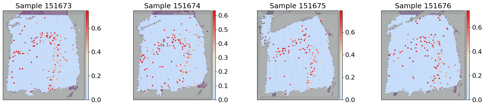
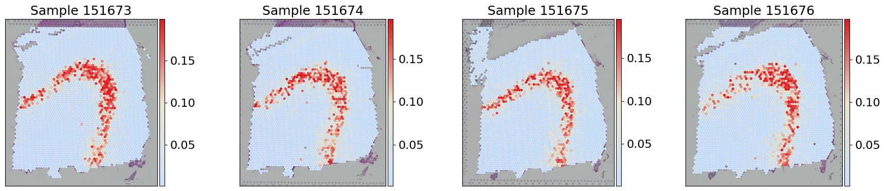
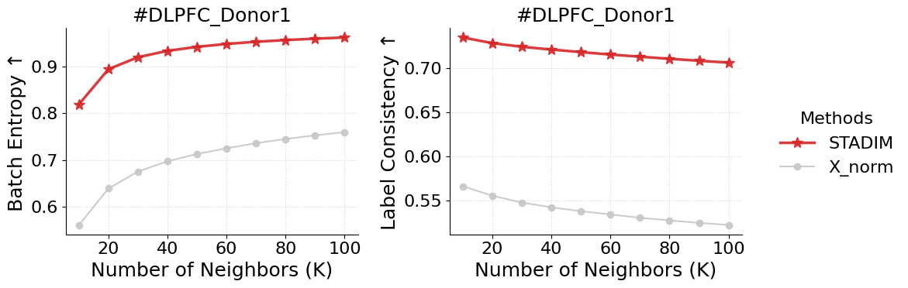
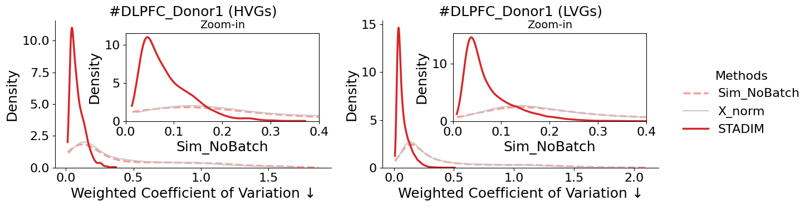
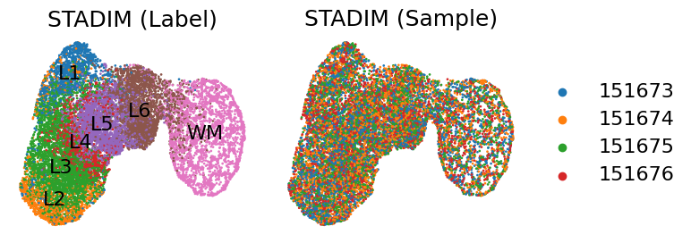

Tutorial 2: Vertical denoising and integration on DLPFC multi slices from 10x Visium
In this tutorial, we evaluate the capability of STADIM in handling vertically adjacent slices. We use the human Dorsolateral Prefrontal Cortex (DLPFC) slice #151673-#151676 generated by 10x Visium platform as a representative example, which is annotated by Maynard et al. into white matter (WM) and cortical layers (L1-L6) based on marker genes and cellular structure.
We download the data via http://spatial.libd.org/spatialLIBD/.
Quick view data
[1]:
import scanpy as sc
import matplotlib.pyplot as plt
import os
sample_ids = ['151673', '151674', '151675', '151676']
data_dir = '/data2/xiaost/SODA/Data/DLPFC/'
fig, axes = plt.subplots(1, 4, figsize=(16, 4))
for i, s_id in enumerate(sample_ids):
adata = sc.read_h5ad(os.path.join(data_dir, f'dlpfc_{s_id}.h5ad'))
print(f'{s_id}')
print(adata)
sc.pl.spatial(adata, color='Label', ax=axes[i], show=False, title=f'Sample {s_id}')
axes[i].set_xlabel('')
axes[i].set_ylabel('')
plt.tight_layout()
plt.show()
151673
AnnData object with n_obs × n_vars = 3611 × 33538
obs: 'in_tissue', 'array_row', 'array_col', 'sample', 'Label'
var: 'gene_ids', 'feature_types', 'genome'
uns: 'spatial'
obsm: 'spatial'
151674
AnnData object with n_obs × n_vars = 3635 × 33538
obs: 'in_tissue', 'array_row', 'array_col', 'sample', 'Label'
var: 'gene_ids', 'feature_types', 'genome'
uns: 'spatial'
obsm: 'spatial'
151675
AnnData object with n_obs × n_vars = 3566 × 33538
obs: 'in_tissue', 'array_row', 'array_col', 'sample', 'Label'
var: 'gene_ids', 'feature_types', 'genome'
uns: 'spatial'
obsm: 'spatial'
151676
AnnData object with n_obs × n_vars = 3431 × 33538
obs: 'in_tissue', 'array_row', 'array_col', 'sample', 'Label'
var: 'gene_ids', 'feature_types', 'genome'
uns: 'spatial'
obsm: 'spatial'

Run STADIM
You can call the STADIM command directly in your terminal:
nohup stadim --input "./dlpfc_151673.h5ad" "./dlpfc_151674.h5ad" "./dlpfc_151675.h5ad" "./dlpfc_151676.h5ad" --save_preprocessed_h5ad None --save_dir ./dlpfc_donor1_test --device "cuda:0" --monitor --seed 2026 --min_genes 0 --min_cells 10 --knn_c 6 --knn_e 10 --mnn_n 25 > ./dlpfc_donor1_test.log 2>&1 &
and load the results into your Python environment for downstream analysis. The denoised expression matrix is conveniently stored within the layers attribute:
import anndata as ad
adata = ad.read_h5ad('/dlpfc_donor1_test/sdata.h5ad')
## The denoised gene expressionis is stored in adata.layers['STADIM']
print(adata)
or you can call STADIM within a Jupyter Notebook as follows:
[2]:
import stadim
adata = stadim.run_STADIM(['/data2/xiaost/SODA/Data/DLPFC/dlpfc_151673.h5ad', '/data2/xiaost/SODA/Data/DLPFC/dlpfc_151674.h5ad',
'/data2/xiaost/SODA/Data/DLPFC/dlpfc_151675.h5ad', '/data2/xiaost/SODA/Data/DLPFC/dlpfc_151676.h5ad'],
save_preprocessed_h5ad=None, save_dir=None,
sample_names=None, batch_key='sample', device='cuda:1', seed=2026,
min_genes=0, min_cells=10, nhvgs=2000, dim=50, knn_c=6, knn_e=10, mnn_n=25,
batch_size=256, triplets_update_ratio=0.8, hard_triplets_ratio=0.7,
epochs=100, lr=1e-3, loss_mode='nb', beta_trip=0.1,
encoder_layers=[512, 256, 64], decoder_layers=[1000])
Results will be stored in adata.layers['STADIM']
=== 1. Begin read_data!
Detected multi-slice data, total 4 slices
Slice 1: Using user-defined column 'sample' as sample
Slice 1: Keeping existing sample label 151673
Slice 2: Using user-defined column 'sample' as sample
Slice 2: Keeping existing sample label 151674
Slice 3: Using user-defined column 'sample' as sample
Slice 3: Keeping existing sample label 151675
Slice 4: Using user-defined column 'sample' as sample
Slice 4: Keeping existing sample label 151676
Merging data...
Raw Merged Data: 14243 spots × 33538 genes
Unified Filtering (min_genes=0, min_cells=10)...
→ After Filtering: 14243 spots × 19326 genes
✓ Complete: Samples included: ['151673', '151674', '151675', '151676']
✓ Complete: AnnData object with n_obs × n_vars = 14243 × 19326
obs: 'in_tissue', 'array_row', 'array_col', 'sample', 'Label'
var: 'gene_ids', 'feature_types', 'genome', 'n_cells'
uns: 'spatial'
obsm: 'spatial'
layers: 'X_raw'
=== 2. Begin MY_preprocess!
== Selected 2000 HVGs across 4 slices
=== 3. Begin all_ap find neighbors!
=== 4. Begin pre_dataset!
{0: '151673', 1: '151674', 2: '151675', 3: '151676'}
Preparing triplet: 100%|██████████| 14243/14243 [00:02<00:00, 6902.20it/s]
=== 5. Begin IterableTripletDataset!
Initializing triplets...
IterableTripletDataset Initialized: 14243 anchors, batch_size=256
=== 6. Begin calculate_recommended_margin!
Calculating recommended margin (averaging over 5 runs)...
========================================
Margins from 5 runs: [15.0, 15.0, 15.0, 15.0, 15.0]
Final Recommended Margin: 15.0000
=== 7. Starting training...
Begin training: device=cuda:1
Training: 100%|██████████| 100/100 [05:23<00:00, 3.24s/it, recon=0.306, triplet=1.794, total=0.486]
=== 8. Generating denoised expression...
Data size (2.75e+08) is within limits. Allocating memory for denoised data.
All processes finished! Total time: 6.62 mins.
[3]:
print(adata)
AnnData object with n_obs × n_vars = 14243 × 19326
obs: 'in_tissue', 'array_row', 'array_col', 'sample', 'Label', 'n_genes_by_counts', 'log1p_n_genes_by_counts', 'total_counts', 'log1p_total_counts', 'size_factor'
var: 'gene_ids', 'feature_types', 'genome', 'n_cells', 'n_cells_by_counts', 'mean_counts', 'log1p_mean_counts', 'pct_dropout_by_counts', 'total_counts', 'log1p_total_counts', 'highly_variable'
uns: 'spatial', 'log1p', 'top_hvgs'
obsm: 'spatial', 'S_scale', 'X_hvg_scale', 'X_pca', 'cell_names', 'STADIM'
layers: 'X_raw', 'X_norm', 'X_log', 'STADIM', 'STADIM_withbatch'
Analysis
[4]:
import anndata as ad
import pandas as pd
import scanpy as sc
import numpy as np
import os
import warnings
warnings.filterwarnings('ignore')
import seaborn as sns
from matplotlib.colors import LinearSegmentedColormap
gene_exp_colors = sns.blend_palette(["#C9E2FF", "#eae6cc", '#e31a1c'], n_colors=100)
gene_exp_palette = LinearSegmentedColormap.from_list("gene_exp", gene_exp_colors)
import matplotlib.pyplot as plt
from matplotlib.lines import Line2D
import matplotlib.patches as mpatches
plt.rcParams.update({
'font.size': 16,
'axes.labelsize': 18,
'axes.titlesize': 18,
'xtick.labelsize': 16,
'ytick.labelsize': 16,
'legend.fontsize': 16,
})
styles = {
'STADIM': {'color': '#d62728', 'marker': '*', 'ms': 10, 'lw': 2.5, 'zorder': 10},
'X_norm': {'color': '#c7c7c7', 'marker': 'o', 'ms': 6, 'lw': 1.5, 'zorder': 5}
}
Gene expression visualization
[5]:
fig, axes = plt.subplots(1, 4, figsize=(18, 4))
for i, s_id in enumerate(sample_ids):
sc.pl.spatial(adata[adata.obs['sample'] == s_id], layer='X_log', color='TRABD2A', cmap=gene_exp_palette, spot_size=150,
library_id=s_id, ax=axes[i], title=f"Sample {s_id}",show=False, vmax='p99')
axes[i].set_xlabel('')
axes[i].set_ylabel('')
plt.tight_layout()
plt.show()

[6]:
adata.X = adata.layers['STADIM'].copy()
sc.pp.log1p(adata)
adata.layers['STADIM_log'] = adata.X.copy()
fig, axes = plt.subplots(1, 4, figsize=(18, 4))
for i, s_id in enumerate(sample_ids):
sc.pl.spatial(adata[adata.obs['sample'] == s_id], layer='STADIM_log', color='TRABD2A', cmap=gene_exp_palette, spot_size=150,
library_id=s_id, ax=axes[i], title=f"Sample {s_id}",show=False, vmax='p99')
axes[i].set_xlabel('')
axes[i].set_ylabel('')
plt.tight_layout()
plt.show()
WARNING: adata.X seems to be already log-transformed.

Batch Entropy
[7]:
%%time
res = stadim.calculate_batch_entropy(adata, test_layers=['X_norm', 'STADIM'], k_range=[10, 20, 30, 40, 50, 60, 70, 80, 90, 100],
group_key='Label', donor_id='DLPFC_Donor1', batch_key='sample', n_hvg=2000)
batch_entropy = pd.DataFrame(res)
display(batch_entropy)
| Method | Donor_ID | K | Avg_Entropy | Avg_Region_Ratio | |
|---|---|---|---|---|---|
| 0 | X_norm | DLPFC_Donor1 | 10 | 0.561502 | 0.566145 |
| 1 | X_norm | DLPFC_Donor1 | 20 | 0.639298 | 0.555410 |
| 2 | X_norm | DLPFC_Donor1 | 30 | 0.675469 | 0.547668 |
| 3 | X_norm | DLPFC_Donor1 | 40 | 0.697315 | 0.542279 |
| 4 | X_norm | DLPFC_Donor1 | 50 | 0.712926 | 0.537930 |
| 5 | X_norm | DLPFC_Donor1 | 60 | 0.725089 | 0.534229 |
| 6 | X_norm | DLPFC_Donor1 | 70 | 0.735988 | 0.530475 |
| 7 | X_norm | DLPFC_Donor1 | 80 | 0.744872 | 0.527497 |
| 8 | X_norm | DLPFC_Donor1 | 90 | 0.752677 | 0.524724 |
| 9 | X_norm | DLPFC_Donor1 | 100 | 0.759480 | 0.522301 |
| 10 | STADIM | DLPFC_Donor1 | 10 | 0.818788 | 0.734438 |
| 11 | STADIM | DLPFC_Donor1 | 20 | 0.893744 | 0.728073 |
| 12 | STADIM | DLPFC_Donor1 | 30 | 0.919236 | 0.723916 |
| 13 | STADIM | DLPFC_Donor1 | 40 | 0.932822 | 0.720812 |
| 14 | STADIM | DLPFC_Donor1 | 50 | 0.941357 | 0.717912 |
| 15 | STADIM | DLPFC_Donor1 | 60 | 0.947545 | 0.715151 |
| 16 | STADIM | DLPFC_Donor1 | 70 | 0.952164 | 0.712708 |
| 17 | STADIM | DLPFC_Donor1 | 80 | 0.955841 | 0.710375 |
| 18 | STADIM | DLPFC_Donor1 | 90 | 0.958784 | 0.708112 |
| 19 | STADIM | DLPFC_Donor1 | 100 | 0.961284 | 0.706041 |
CPU times: user 1min 29s, sys: 3.89 s, total: 1min 33s
Wall time: 40.6 s
[8]:
metrics = ['Avg_Entropy', 'Avg_Region_Ratio']
y_labels = ['Batch Entropy \u2191', 'Label Consistency \u2191']
plot_data = batch_entropy.groupby(['Method', 'K'])[metrics].mean().reset_index()
fig, axes = plt.subplots(1, 2, figsize=(10, 4), sharex=True)
for i, metric in enumerate(metrics):
ax = axes[i]
for m in ['STADIM','X_norm']:
data = plot_data[plot_data['Method'] == m].sort_values('K')
if data.empty: continue
ax.plot(data['K'], data[metric], label=m,
color=styles[m]['color'], marker=styles[m]['marker'],
markersize=styles[m]['ms'], linewidth=styles[m]['lw'],
zorder=styles[m]['zorder'], alpha=0.9)
ax.set_title(f"#DLPFC_Donor1")
ax.set_xlabel('Number of Neighbors (K)')
ax.set_ylabel(y_labels[i])
ax.set_xticks([20, 40, 60, 80, 100])
ax.grid(True, linestyle=':', alpha=0.5)
sns.despine(ax=ax)
handles, labels = axes[0].get_legend_handles_labels()
fig.legend(handles, labels, loc='center left', bbox_to_anchor=(1.0, 0.5),
title='Methods', frameon=False)
plt.tight_layout()
plt.show()

weighted Coefficient of Variation (wCV)
[9]:
benchmark_adata = stadim.create_shuffled_batches(adata, n_batches=5)
benchmark_adata.var = adata.var
print(f"\nbenchmark adata: {benchmark_adata}")
benchmark adata: AnnData object with n_obs × n_vars = 14243 × 19326
obs: 'in_tissue', 'array_row', 'array_col', 'sample', 'Label', 'n_genes_by_counts', 'log1p_n_genes_by_counts', 'total_counts', 'log1p_total_counts', 'size_factor', 'sim_batch'
var: 'gene_ids', 'feature_types', 'genome', 'n_cells', 'n_cells_by_counts', 'mean_counts', 'log1p_mean_counts', 'pct_dropout_by_counts', 'total_counts', 'log1p_total_counts', 'highly_variable'
obsm: 'spatial', 'S_scale', 'X_hvg_scale', 'X_pca', 'STADIM'
layers: 'X_raw', 'X_norm', 'X_log', 'STADIM', 'STADIM_withbatch', 'STADIM_log'
[10]:
%%time
wcv = {}
for gene_type in ["HVGs", "LVGs"]:
print(f"\ngene_type: {gene_type}")
# wCV before and after STADIM
res_deno = stadim.calculate_cv(adata, batch_key='sample', label_key='Label', methods=['X_norm', 'STADIM'], gene_type=gene_type)
# wCV of simulated benchmark no batch data, calculated with X_norm and shuffled labels
res_bench = stadim.calculate_cv(benchmark_adata, batch_key='sim_batch', label_key='Label', methods=['X_norm'], gene_type=gene_type)
res_bench = res_bench.rename(columns={'X_norm': 'Sim_NoBatch'})
wcv[gene_type] = res_bench.join(res_deno, how='inner')
print(wcv["HVGs"].head())
gene_type: HVGs
--- Calculating CV on 2000 genes of type: HVGs ---
Methods successfully calculated: ['X_norm', 'STADIM']
--- Calculating CV on 2000 genes of type: HVGs ---
Methods successfully calculated: ['X_norm']
gene_type: LVGs
--- Calculating CV on 17326 genes of type: LVGs ---
Methods successfully calculated: ['X_norm', 'STADIM']
--- Calculating CV on 17326 genes of type: LVGs ---
Methods successfully calculated: ['X_norm']
Sim_NoBatch X_norm STADIM
HES4 0.098084 0.125947 0.037362
VWA1 0.110024 0.116677 0.055306
AL645728.1 0.907844 0.635260 0.110994
FO704657.1 1.088555 0.903454 0.133141
AL109917.1 0.652083 0.713419 0.074418
CPU times: user 11.7 s, sys: 2.02 s, total: 13.7 s
Wall time: 13.7 s
[11]:
from mpl_toolkits.axes_grid1.inset_locator import inset_axes
methods = ['Sim_NoBatch', 'X_norm', 'STADIM']
colors = {'Sim_NoBatch': '#ff9896', 'X_norm': '#c7c7c7', 'STADIM': '#d62728'}
gene_types = ['HVGs', 'LVGs']
fig, axes = plt.subplots(1, 2, figsize=(12, 4))
for i, g_type in enumerate(gene_types):
ax = axes[i]
df = wcv[g_type]
ax_ins = inset_axes(ax, width="70%", height="60%", loc=1, borderpad=1)
for m in methods:
if m not in df.columns: continue
style = {
'label': m, 'color': colors.get(m, '#333333'), 'fill': False,
'linewidth': 2.5 if m != 'X_norm' else 1.5,
'linestyle': '--' if m == 'Sim_NoBatch' else '-',
'zorder': 10 if m == 'STADIM' else 5,
'cut': 0
}
sns.kdeplot(df[m].dropna(), ax=ax, **style)
sns.kdeplot(df[m].dropna(), ax=ax_ins, **style)
ax.set_title(f"#DLPFC_Donor1 ({g_type})")
ax.set_xlabel("Weighted Coefficient of Variation \u2193")
ax_ins.set_xlim(0, 0.4)
ax_ins.set_title("Zoom-in", fontsize=14)
sns.despine(ax=ax)
handles, labels = axes[0].get_legend_handles_labels()
fig.legend(handles, labels, loc='center left', bbox_to_anchor=(1.0, 0.5),
title='Methods', frameon=False)
plt.tight_layout()
plt.show()

Latent representation Umap
[12]:
%%time
sc.pp.neighbors(adata, use_rep='STADIM', key_added=f'neighbors_STADIM')
sc.tl.umap(adata, neighbors_key=f'neighbors_STADIM')
adata.obsm['X_umap_STADIM'] = adata.obsm['X_umap'].copy()
print(adata)
AnnData object with n_obs × n_vars = 14243 × 19326
obs: 'in_tissue', 'array_row', 'array_col', 'sample', 'Label', 'n_genes_by_counts', 'log1p_n_genes_by_counts', 'total_counts', 'log1p_total_counts', 'size_factor'
var: 'gene_ids', 'feature_types', 'genome', 'n_cells', 'n_cells_by_counts', 'mean_counts', 'log1p_mean_counts', 'pct_dropout_by_counts', 'total_counts', 'log1p_total_counts', 'highly_variable'
uns: 'spatial', 'log1p', 'top_hvgs', 'neighbors_STADIM', 'umap'
obsm: 'spatial', 'S_scale', 'X_hvg_scale', 'X_pca', 'STADIM', 'X_umap', 'X_umap_STADIM'
layers: 'X_raw', 'X_norm', 'X_log', 'STADIM', 'STADIM_withbatch', 'STADIM_log'
obsp: 'neighbors_STADIM_distances', 'neighbors_STADIM_connectivities'
CPU times: user 4min 28s, sys: 225 ms, total: 4min 28s
Wall time: 1min 3s
[13]:
fig, axes = plt.subplots(1, 2, figsize=(8, 3))
sc.pl.embedding(adata, basis='X_umap_STADIM', color='Label', ax=axes[0], show=False, legend_loc='on data', legend_fontweight='normal',
title='STADIM (Label)', frameon=False, s=15)
sc.pl.embedding(adata[np.random.permutation(adata.n_obs)], basis='X_umap_STADIM', color='sample', ax=axes[1], show=False,
title='STADIM (Sample)', frameon=False, s=15)
plt.tight_layout()
plt.show()

[ ]:
[ ]: